Manual de Administração — Pre-Sales Compliance Platform
Este manual cobre a área Configurações, disponível para usuários com pelo menos uma permissão
administrativa. Para o uso do dia a dia (projetos, propostas, POC, Precificação), veja o
A área de Configurações tem 12 seções na barra lateral. Cada seção só aparece para quem tem a(s)
permissão(ões) correspondente(s) — é normal um administrador não-técnico não ver, por exemplo,
"Armazenamento e Documentos".
Sumário
9-bis. Demandas de Pré-Vendas (integração com o CMCRM)
Visão Geral do Sistema
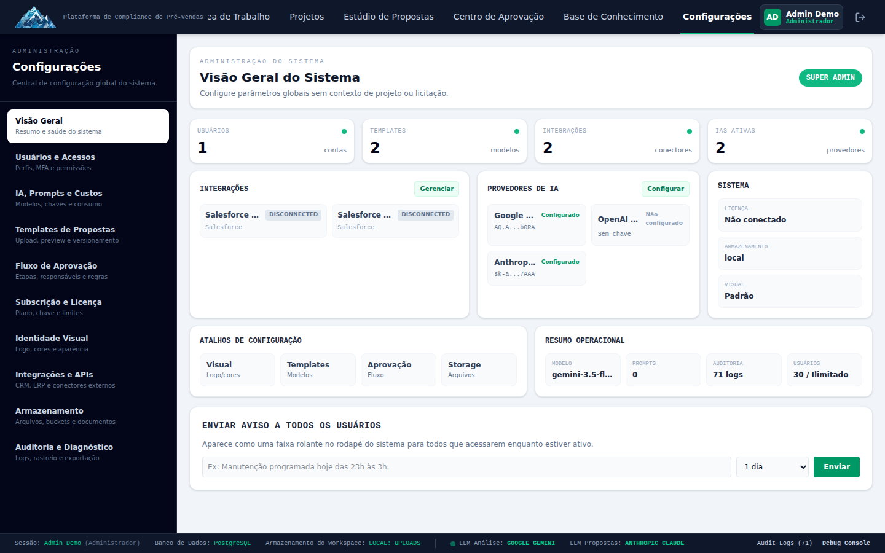
Permissão necessária: qualquer permissão administrativa.
Painel inicial da área de Configurações, com cards de resumo:
- Integrações — atalho e status resumido dos conectores configurados.
- Provedores de IA — quais provedores (Gemini, OpenAI, Anthropic, personalizados) estão
configurados e prontos para uso.
- Sistema — licença, modo de armazenamento e branding em um único lugar.
- Atalhos de Configuração — links diretos para as seções mais usadas.
- Resumo Operacional — modelo de IA padrão, número de prompts customizados, número de logs de
auditoria e número de usuários cadastrados.
- Enviar Aviso a Todos os Usuários — formulário para publicar um comunicado que aparece para
todos os usuários da instância (útil para avisar sobre manutenção, mudanças de processo, etc.).
Usuários e Acessos
Permissões necessárias: admin:users (gerenciar usuários) e/ou admin:roles (gerenciar
perfis).
1 Perfis (Roles)
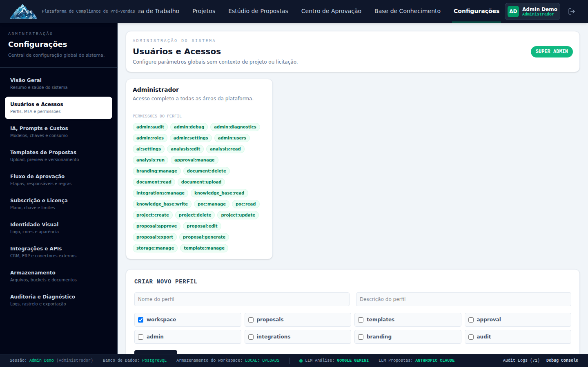
Um perfil é um conjunto nomeado de permissões (ex: "Vendedor", "Engenheiro", "Aprovador"). Cada
card de perfil mostra checkboxes com todas as permissões do sistema — marque/desmarque para ajustar
o que aquele perfil pode fazer, e clique em Criar Novo Perfil para começar um do zero.
Mudar as permissões de um perfil afeta imediatamente todos os usuários que já têm esse perfil atribuído — não é preciso "salvar e aplicar" separadamente por usuário.
Referência rápida das permissões disponíveis:
| Permissão | Controla |
|---|---|
project:create / project:update / project:delete | Criar, editar, excluir projetos |
analysis:run / analysis:read / analysis:edit | Rodar, ver e editar análises de IA |
proposal:generate / proposal:edit / proposal:export / proposal:approve | Ciclo de vida da proposta |
approval:manage | Configurar fluxos de aprovação |
document:upload / document:read / document:delete | Documentos do projeto |
knowledge_base:read / knowledge_base:write | Base de Conhecimento |
poc:read / poc:manage | Módulo de Prova de Conceito |
pricing:read / pricing:manage | Módulo de Precificação (catálogo, extrações, precificação de projeto) |
template:manage | Templates de proposta e verticais |
branding:manage | Logo e cores da identidade visual |
integrations:manage | Conectores de CRM/ERP |
storage:manage | Modo de armazenamento de arquivos |
ai:settings | Provedores de IA, prompts, teto de custo |
admin:users / admin:roles | Gestão de usuários e perfis |
admin:settings | Licença/assinatura e conexão com o CMSaaS |
admin:audit | Log de auditoria |
admin:debug / admin:diagnostics | Console de debug e pacote de diagnóstico |
admin:system_updates | Agendar/aplicar atualizações de versão (Sistema de Atualização de Produção) |
2 Diretório de Usuários
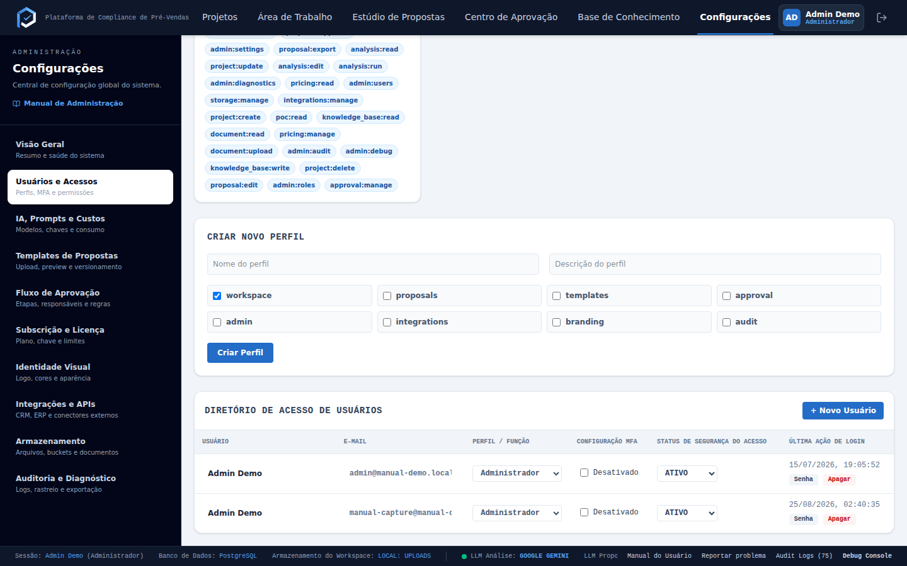
Tabela com todos os usuários da instância. + Novo Usuário pede nome, e-mail, senha inicial e
perfil. Cada linha tem uma opção de redefinir senha — use quando um usuário esquecer a senha
(não existe fluxo de "esqueci minha senha" self-service).
Ao criar um usuário, escolha o perfil com cuidado — como não há tela de "editar permissões individuais", quem precisar de um conjunto de permissões diferente de qualquer perfil existente vai precisar de um perfil novo (seção 2.1).
IA, Prompts e Custos
Permissão necessária: ai:settings.
Esta é a seção mais densa do Admin Console.
1 Modelos e Provedores de IA

- Cadastre chaves de API para Gemini, OpenAI e/ou Anthropic, e provedores personalizados
compatíveis com a API da OpenAI (clique em + Adicionar Provedor).
- No mapa Tarefa → Provedor → Modelo, escolha qual provedor/modelo atende cada tipo de tarefa
de IA do sistema (análise de documento, geração de proposta, classificação, etc.) — não é
preciso usar o mesmo provedor para tudo.
- Teto Mensal de Custo (USD) — defina um limite de gasto mensal com IA; o sistema bloqueia
novas chamadas ao atingir o teto (com aviso em 80% do valor).
Se o add-on IA/KB (gerenciado pelo CMSaaS) estiver ativo nesta instalação, esta seção vira somente-leitura, com um aviso explicando que os provedores/modelos agora são geridos centralmente. Isso é esperado — não é um bug. Para mudar algo nesse caso, o pedido precisa ir para quem administra o CMSaaS, não por aqui.
2 Custos de IA e Prompts
*(Card visível na mesma tela do print anterior, coluna "Custos de IA e Prompts")*
Mostra o consumo do mês corrente por serviço e provedor, e a data do próximo vencimento de
cobrança. É informativo — a cobrança em si é gerida pelo CMSaaS.
3 Templates de Prompt
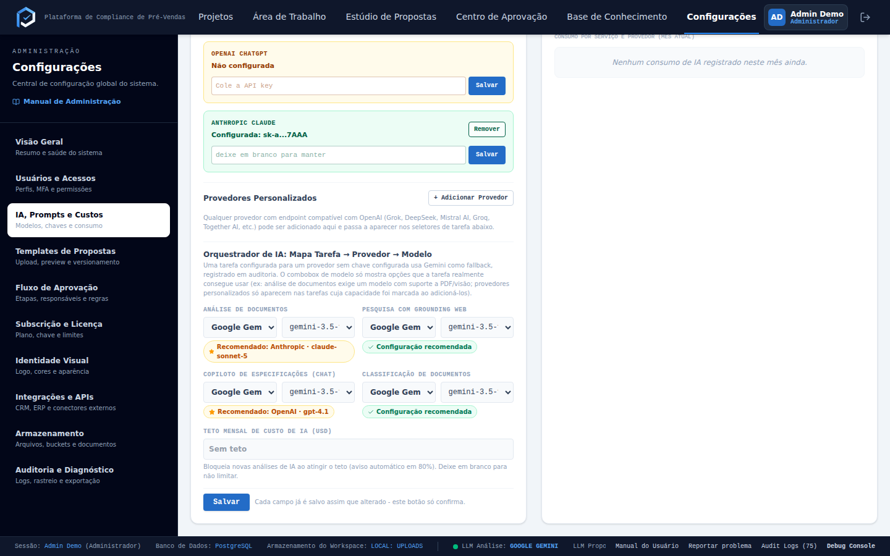
Quatro prompts do sistema podem ser customizados, cada um com histórico de versões:
- Classificação de Documentos
- Geração de Caderno de Teste (POC)
- Sugestão de Cronograma (POC)
- Questionário de Relatório Final (POC)
Para cada um: criar nova versão (editar o texto do prompt), ativar uma versão (torná-la a
usada em produção), ou resetar para o padrão de fábrica se algo sair errado. Versões antigas
ficam guardadas — nada é perdido ao trocar de versão ativa.
Templates de Propostas
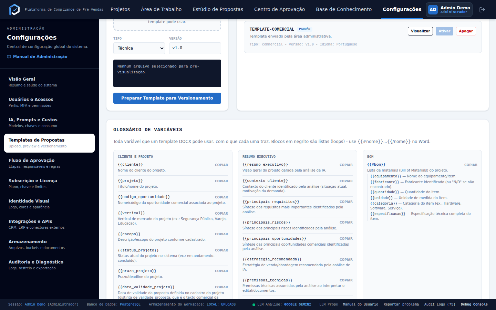
Permissão necessária: template:manage.
Envie um arquivo DOCX de modelo para cada um dos 7 tipos de proposta (Técnica, Comercial,
Técnico-Comercial, Resumo Executivo, Relatório de Riscos, Relatório de BOM, Relatório de
Perguntas) em Enviar Template. Cada tipo pode ter múltiplas versões enviadas — use Ativar
para escolher qual delas é usada quando um usuário gera aquele tipo de proposta.
Nesta mesma tela fica a gestão de Verticais de Indústria (Saúde, Educação, Transporte etc.) —
ative, desative ou exclua verticais conforme o mercado de atuação da empresa mudar.
Fluxo de Aprovação de Propostas
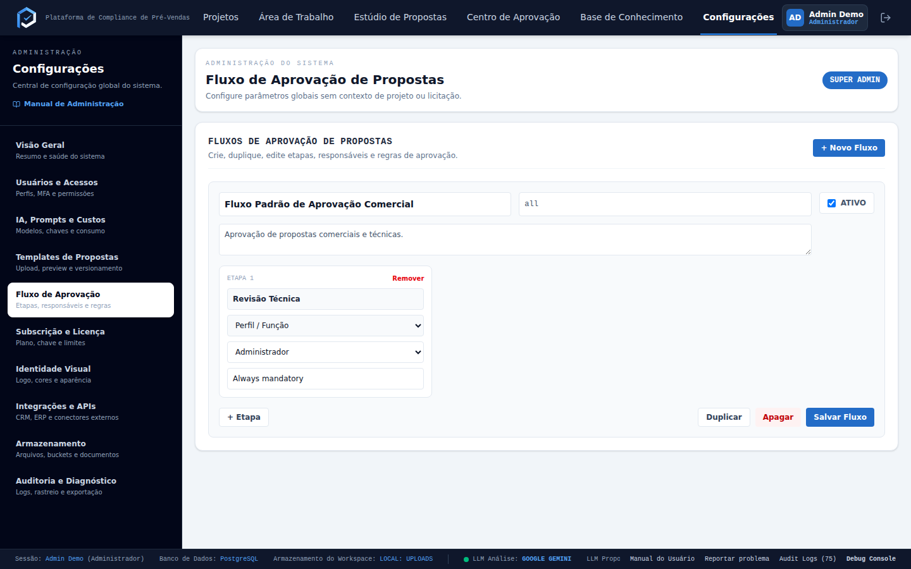
Permissão necessária: approval:manage.
Um fluxo define quantas etapas uma proposta passa antes de ser considerada aprovada, e quem
aprova cada etapa. Clique em + Novo Fluxo, depois + Nova Etapa para cada etapa, definindo:
- Nome da etapa (precisa ser único dentro do fluxo).
- Aprovador — uma pessoa específica, ou qualquer usuário que tenha um determinado perfil.
- Obrigatória (
mandatory) — ligada por padrão. Veja o efeito exato abaixo. - Aplica-se a (
applies_to) — um rótulo livre (ex: "Propostas Técnicas", "all"). Hoje esse
campo é só informativo/organizacional: nenhuma tela filtra automaticamente por ele ao vincular
um fluxo a um projeto (veja a limitação importante logo abaixo).
1 Como a decisão realmente funciona
Isso não está descrito em nenhum lugar da interface, então vale entender antes de configurar um
fluxo real:
- As etapas não são estritamente sequenciais. O sistema não bloqueia a decisão de uma etapa
posterior antes de uma anterior ser decidida — cada aprovador configurado pode decidir sua
própria etapa a qualquer momento, independentemente do estado das outras. A ordem cadastrada
serve principalmente para exibição.
- Cada etapa só pode ser decidida uma vez. Depois de registrada, a decisão daquela etapa é
definitiva — não existe "mudar de ideia" ou refazer a decisão pela interface.
- **A proposta só vira "Aprovada" quando TODAS as etapas marcadas como obrigatórias tiverem
decisão "Aprovado".** Etapas não-obrigatórias não precisam ser decididas para a proposta avançar.
- **Uma única rejeição, em qualquer etapa — obrigatória ou não — rejeita a proposta inteira
imediatamente.** A partir daí, nenhuma outra etapa pode mais ser decidida (o sistema só aceita
decisões enquanto a proposta está com status "Enviada para Aprovação"). Ou seja: uma etapa
opcional configurada sem cuidado ainda pode travar/encerrar todo o processo sozinha se seu
aprovador rejeitar.
Se o aprovador de uma etapa for um perfil (não uma pessoa), qualquer usuário com aquele perfil pode decidir aquela etapa — útil para não travar a aprovação na ausência de uma pessoa específica.
2 Limitação importante: como um fluxo é vinculado a um projeto
**No estado atual do sistema, não existe nenhuma tela para escolher qual fluxo de aprovação se
aplica a um projeto específico.** Esse vínculo (selected_approval_workflow_id, no projeto) não
aparece em nenhum formulário — nem na criação do projeto (com IA ou manual), nem na edição.
Na prática, isso significa que o botão "Enviar para Aprovação de Fluxo" (Estúdio de Propostas,
veja o Manual do Usuário) vai retornar erro ("fluxo de aprovação ativo não encontrado") em
qualquer projeto criado normalmente pela interface, mesmo depois de você cadastrar um fluxo aqui —
o campo do projeto nunca é preenchido com o ID do fluxo real.
Até que essa tela exista, o vínculo só pode ser feito manualmente no banco de dados (tarefa para o
time técnico/suporte, não para o administrador pela interface). Recomendamos reportar isso como
item de produto a ser corrigido — hoje, cadastrar um fluxo de aprovação aqui não é suficiente para
usá-lo de fato em um projeto real.
Subscrição e Licença
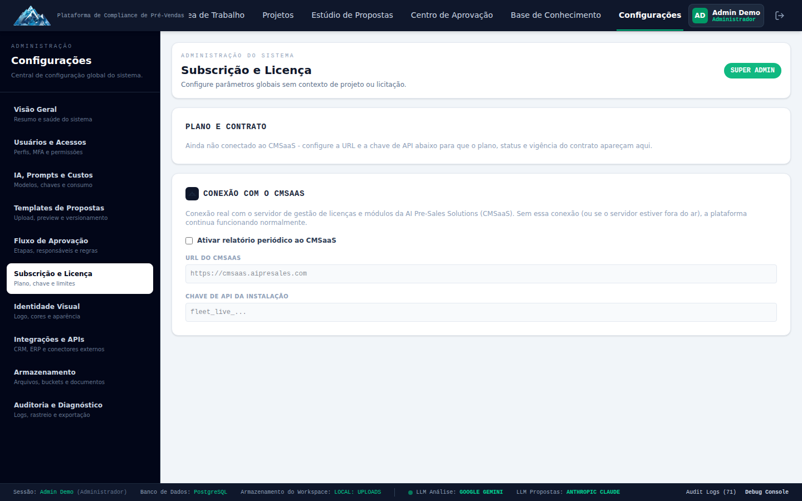
Permissão necessária: admin:settings.
Esta seção é somente-leitura para os dados vindos do CMSaaS via heartbeat automático: nome e
logo do cliente, plano contratado, status da assinatura, vigência do contrato, módulos habilitados
e horário da última verificação. Não é possível editar esses dados por aqui — qualquer mudança de
plano/contrato precisa ser feita do lado do CMSaaS.
Nesta mesma tela, porém, fica a configuração da conexão com o CMSaaS em si: ativar/desativar a
integração, URL do Fleet Manager e chave de API. Isso sim é configurável localmente — é o "fio"
que liga esta instalação ao painel de licenciamento central.
Sistema de Atualização de Produção

Permissão necessária: admin:system_updates.
Controla a versão desta instalação, entregue pelo CMSaaS (Fleet Manager) via Release
(draft → publicada → retirada), em canal canary ou stable.
- Versão Atual: versão instalada (
git describe) e SHA do commit, com aviso se houver
alterações locais não commitadas (-dirty).
- Última Release Disponível: versão mais recente para o canal desta instalação — verificado a
cada heartbeat (até 20 min). Mostra "Já instalada" quando não há nada novo, ou o botão
Atualizar Agora quando há. Ver notas de versão mostra o changelog da release direto do
CMSaaS.
- Agendar Atualização: escolha data/hora para aplicar a próxima atualização automaticamente
(um agendamento perdido por até 15 minutos ainda roda sozinho; além disso, precisa ser
reagendado manualmente), ou cancele um agendamento já feito.
- Histórico de Atualizações: cada tentativa (sucesso, falha, revertida automaticamente) com
quem/o que disparou (usuário, agendamento ou comando remoto do CMSaaS), referência do backup
feito antes da atualização, e o log de erro quando aplicável.
O processo em si (backup do banco e do .env → atualização do código → migração do banco →
build → reinício → verificação de saúde) é automático e reverte sozinho para o estado anterior se
qualquer etapa falhar — não há passo manual de rollback a fazer.
Personalização e Identidade Visual
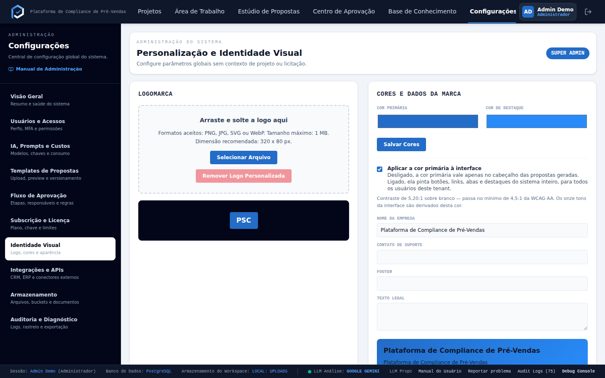
Permissão necessária: branding:manage.
- Envie o logo da empresa (arraste ou clique — aceita PNG, JPEG, SVG ou WEBP) ou remova o logo
atual.
- Escolha a Cor Primária e a Cor de Destaque usadas na interface.
Integrações, CRMs, ERPs e APIs
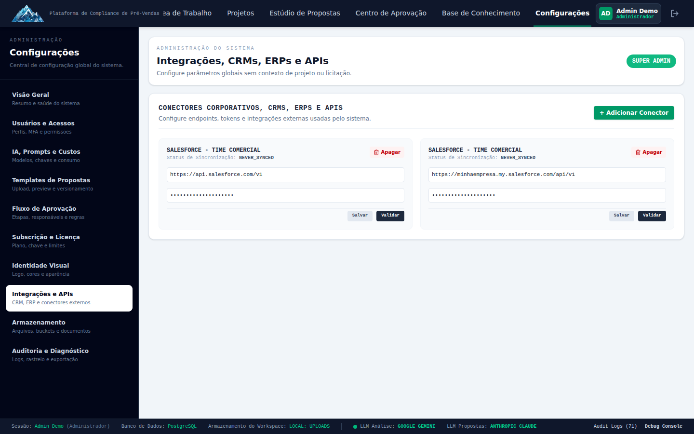
Permissão necessária: integrations:manage.
Conecte sistemas externos: conectores prontos para Salesforce e HubSpot (URL já
pré-preenchida, só falta a credencial), ou um conector do tipo customizado para qualquer outro
sistema com API compatível.
Isto não é a integração com o CMCRM (o CRM interno da empresa) descrita na seção seguinte. São dois mecanismos diferentes: este aqui é o conector genérico para CRMs de terceiros; o par com o CMCRM é outra coisa, ligada do lado de fora deste produto.
9-bis. Demandas de Pré-Vendas (integração com o CMCRM)
Permissão necessária: admin:settings ou demand:manage (o gerente de pré-vendas também
vê esta seção, sem precisar de acesso administrativo completo).
Esta seção não é a fila de trabalho — quem assume, devolve ou direciona uma Demanda faz isso
pelos cards da Início ou pela fila completa (Manual do Usuário, seção 4-bis). Aqui é o lado de
configuração e auditoria: prazo por etapa, política de atribuição, alertas, tempo de resposta da
equipe e o registro dos expurgos pedidos pelo CRM.
Onde isto se liga: uma nota importante
O administrador não ativa ou desativa a integração com o CMCRM por aqui. O par entre esta
instalação do PreSales e uma instalação do CMCRM é estabelecido do lado de fora, no **painel de
Instalação do CMSaaS (aba Integração**) — é lá que alguém liga, desliga ou revoga o par. Esta
seção só existe, e só mostra dado, quando o par já está ativo; sem par, ela simplesmente não
aparece para ninguém (a permissão continua existindo, mas não há Demanda para configurar prazo
sobre). Se um administrador do PreSales perguntar "como eu ligo a integração com o CRM", a resposta
correta é: não é aqui — peça para quem administra o CMSaaS.
Prazos e desempenho
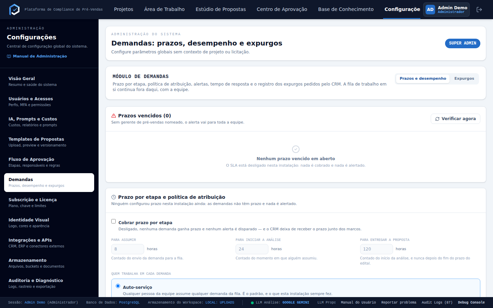
- Cobrar prazo por etapa — desligado por padrão. Ligado, cada Demanda passa a ter um prazo para
três marcos: assumir, iniciar a análise e entregar a proposta (em horas, contadas a
partir do evento anterior — envio, atribuição e início da análise, respectivamente). Desligado,
nenhuma Demanda ganha prazo e nada é alertado — o CRM deixa de receber o prazo junto dos marcos.
- Quem trabalha em cada Demanda — a política de atribuição da instalação:
- Auto-serviço (padrão) — qualquer pessoa da equipe assume qualquer Demanda da fila.
- Direcionamento — só o gerente de pré-vendas decide quem recebe cada Demanda; o botão de
assumir some da tela de quem não é gerente.
- Prazos vencidos — lista de Demandas com algum marco estourado, com Verificar agora para
forçar uma nova varredura sem esperar o ciclo automático. Sem gerente de pré-vendas nomeado na
instalação, o alerta vai para toda a equipe.
*(A mesma tela, mais abaixo, mostra o tempo médio de resposta da equipe — é a versão administrativa
do gráfico "Desempenho da fila" que também aparece na Início de quem tem acesso à fila.)*
Expurgos
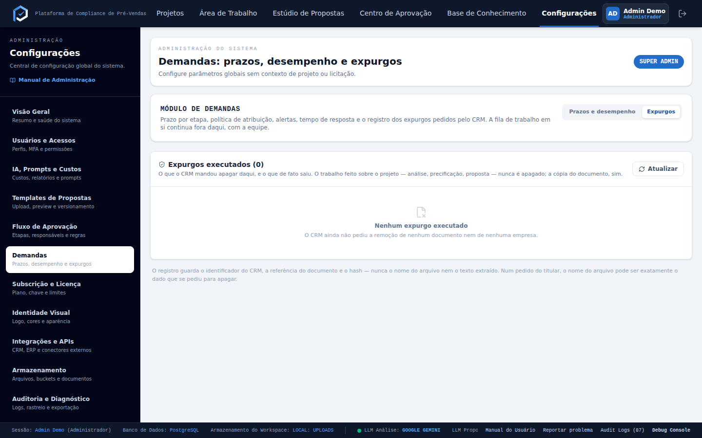
Quando o CRM manda apagar um documento ou uma empresa (pedido de retenção ou de titular de dados),
o PreSales apaga a cópia local do que foi pedido e devolve a confirmação — mas **o trabalho já
feito em cima do projeto nunca é apagado**: análise, precificação e proposta continuam existindo,
só o documento-fonte (ou a referência à empresa) some. Esta tela é o registro de cada expurgo
executado: o que o CRM pediu apagar, e o que de fato saiu.
O registro guarda o identificador do CRM, a referência do documento e o hash — nunca o nome do arquivo nem o texto extraído. Num pedido de titular de dados, o nome do arquivo pode ser exatamente o dado que se pediu para apagar.
Cancelamento pelo vendedor
O cancelamento de uma Demanda não é decidido no PreSales. O vendedor cancela a oportunidade lá
no CMCRM, sempre com justificativa e sempre com aprovação do líder direto dele — o gerente
da equipe do vendedor, ou o administrador da organização quando esse vendedor não tem equipe
configurada. O que chega ao PreSales é o cancelamento já aprovado: quem está com a Demanda (ou
o gerente de pré-vendas daqui) vê o aviso e clica em Encerrar demanda para fechar o que ainda
estava em andamento. Não existe, do lado do PreSales, uma tela para recusar ou reverter esse
cancelamento — a decisão já foi tomada do outro lado.
Atualização pós-envio
Uma mudança na oportunidade depois que a Demanda já foi enviada (prazo, escopo, valor) não
sobrescreve nada automaticamente. Ela chega como uma atualização pendente, mostrando o antes e
o depois de cada campo alterado, e fica esperando quem está com a Demanda decidir — campo por campo
— entre levar a mudança para o projeto ou ignorá-la. O projeto em si só é tocado quando essa decisão
é tomada; não existe um processo automático que reescreva um projeto que o pré-vendas já editou.
Armazenamento e Documentos
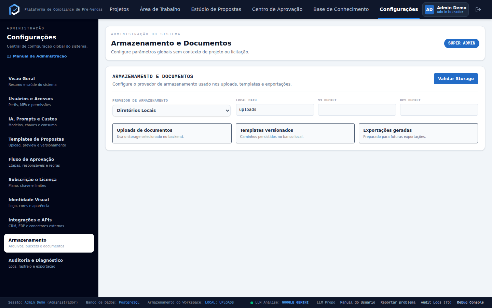
Permissão necessária: storage:manage.
Escolha onde os arquivos enviados pelos usuários (documentos de projeto, templates, etc.) são
fisicamente armazenados:
| Modo | Quando usar |
|---|---|
| Diretórios Locais | Instalação on-premise simples, sem dependência de nuvem |
| AWS S3 | Ambiente já usa infraestrutura AWS |
| Google Cloud Storage | Ambiente já usa infraestrutura GCP |
Cada modo pede os campos específicos daquele provedor (caminho local, nome do bucket S3, nome do
bucket GCS).
Trocar o modo de armazenamento não migra automaticamente os arquivos já enviados no modo anterior — planeje essa mudança com cuidado, de preferência logo no início da operação da instância.
Auditoria e Diagnóstico
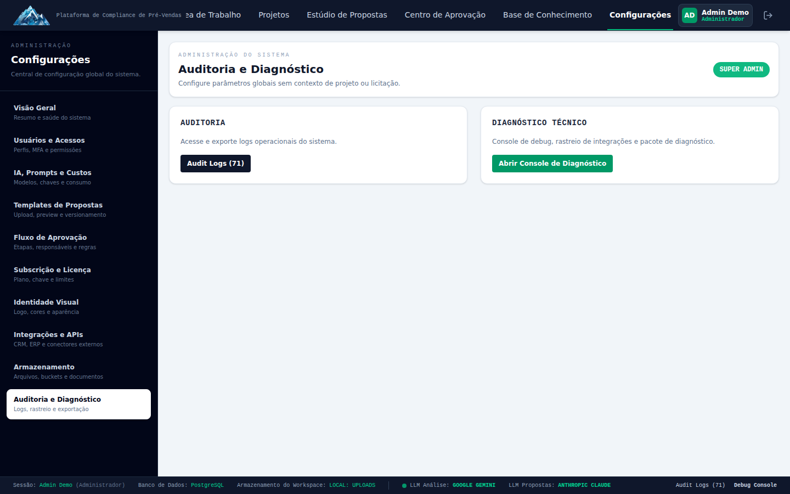
Permissões necessárias: admin:audit (log de auditoria), admin:debug /
admin:diagnostics (console de debug e diagnóstico).
- Log de Auditoria — botão "Audit Logs (N)" abre o livro completo de ações administrativas e
sensíveis realizadas na instância (quem fez o quê e quando). Exportar Livro CSV gera um
arquivo para auditoria externa/compliance.
- Console de Diagnóstico — botão "Abrir Console de Diagnóstico" abre uma tela técnica com
logs de debug do sistema e um botão para baixar o Pacote de Diagnóstico (um resumo
sanitizado do estado do sistema, útil para enviar ao suporte técnico em caso de problema).
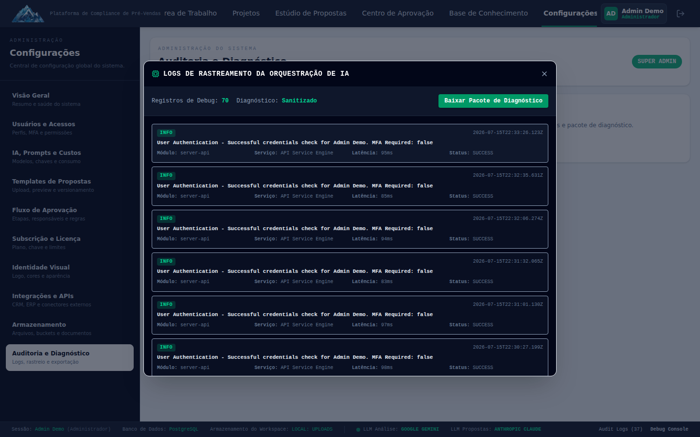
Boas práticas de administração
- Prefira perfis a exceções por pessoa. Se duas ou três pessoas vão precisar do mesmo conjunto
de permissões, crie um perfil em vez de lembrar manualmente quem tem o quê.
- Revise o log de auditoria periodicamente, não só quando algo dá errado — é a forma mais
simples de perceber uso indevido ou configuração incorreta cedo.
- Trate os Templates de Propostas como um documento controlado. Antes de ativar uma nova versão
de template, revise o conteúdo — ele vira imediatamente o padrão para todas as propostas novas
daquele tipo.
- Configure o Teto Mensal de Custo de IA (seção 3.1) desde o início, mesmo que generoso — evita
surpresa na fatura do provedor de IA.
- Ao adicionar um novo tipo de aprovador em um fluxo (seção 5), prefira vincular por perfil em
vez de pessoa específica sempre que fizer sentido — reduz a chance de uma aprovação travar por
ausência de alguém.